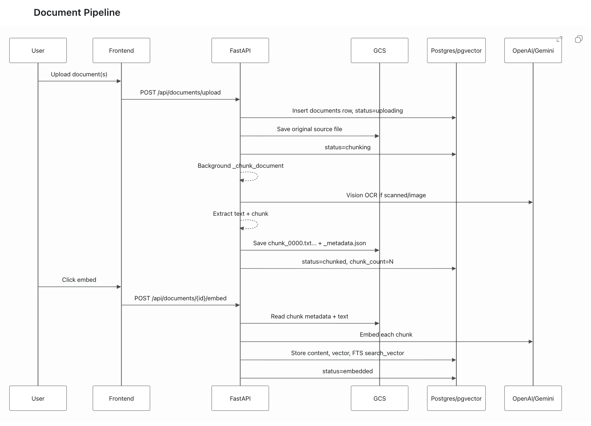
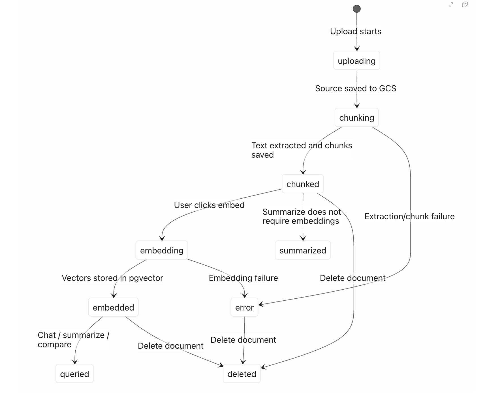
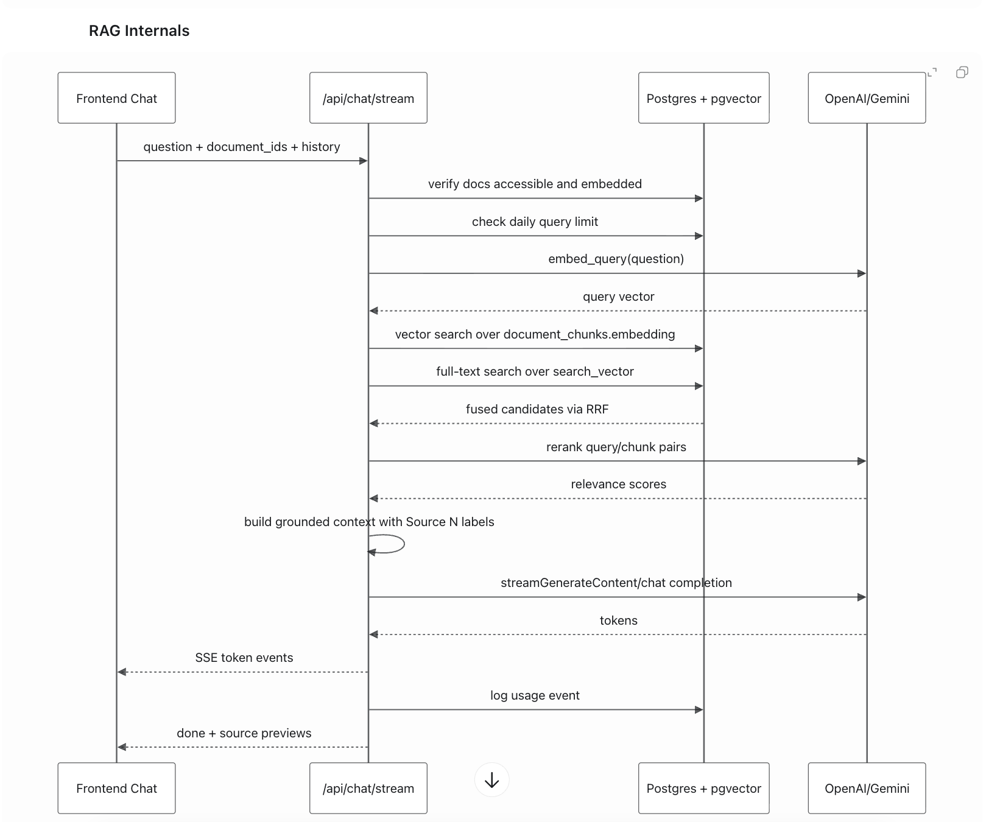

DocIntel Interview Presentation
Prepared by Braja Das for PNNL · Bio, problem statement, architecture, API/database design, product demo, and AI + DevOps perspective.
Tap anywhere to begin



POST /api/documents/upload
POST /api/documents/{id}/classify
POST /api/documents/{id}/embed
POST /api/chat/sessions
POST /api/chat/query
POST /api/summaries
POST /api/compare
GET /api/admin/traces
GET /api/admin/traces/{trace_id}
Request controls:
redact_pii: true
language: auto | en | es | bn | hi | ar
trace: enabledusers documents document_chunks chat_sessions chat_messages document_tags usage_events audit_logs trace_flows trace_spans trace_llm_events trace_retrieved_context Vector index: document_chunks.embedding vector(768)